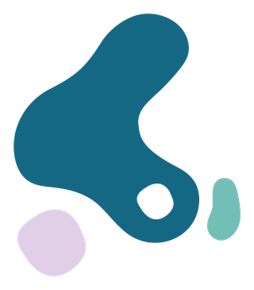

La Dra. Abril Méndez Pérez cuenta con una trayectoria académica sólida en Ortopedia y Traumatología, formada en instituciones de prestigio. Actualmente atiende en el Hospital SomaPlus, en Tarímbaro, Michoacán.
Adiestramiento en servicio · 1,680 horas
Hospital Central Militar · Ciudad de México
Universidad del Ejército y Fuerza Aérea
Ciudad de México
Universidad Anáhuac México
Ciudad de México
Universidad Anáhuac México
Ciudad de México
Toda la práctica está respaldada por registros vigentes ante las autoridades correspondientes.
Médico Cirujano — N.º 10818856
Ortopedia y Traumatología — N.º 15063431
Especialista en Ortopedia y Traumatología · Consejo Mexicano de Ortopedia y Traumatología, A.C.
N.º 1/7667/25 · Vigencia 01/03/2025 – 01/03/2030
Certificado del curso Basic Principles of Fracture Management (blended course).
Participación en congresos nacionales de la especialidad.
«Tratamiento de ruptura de tendón de Aquiles en el Hospital Central Militar, serie de casos»
LXIX Congreso Nacional de Ortopedia · Colegio Mexicano de Ortopedia y Traumatología
«Experiencia en el Hospital Central Militar con acetabuloplastia en defectos acetabulares»
LXVIII Congreso Nacional de Ortopedia · Colegio Mexicano de Ortopedia y Traumatología
Registros vigentes ante la Comisión Federal para la Protección contra Riesgos Sanitarios.
Aviso de Funcionamiento
COFEPRIS-05-036
Número de ingreso: 2616015036A00069
Aviso de Publicidad
COFEPRIS-02-002-A
Número de ingreso: 2616012002A00118

Agenda tu cita hoy y recibe una valoración con la Dra. Abril Méndez.
WhatsApp 443 173 1947